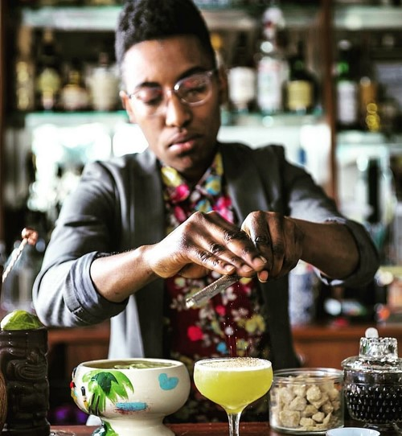

Despite it's haopy persona, tiki's history can be anything but friendly. Often reinforcing stereotypes, there is a new generation of bar owners and spirits specialists who are bringining new life and diversity to the scene.

Bars like Boston's Tanám represent the evolution of modern tiki by "infusing their tiki drinks with deeper meaning and stories," an evolution which they call Afro-Tiki. Through food, drink and conversation, their vision centers on Black and Brown voices to shed light on the marginalized and often forgotten contributions to tiki.

Austin's Tiki Tatsu-Ya incorporates Japanese culture and moves away from classic tropes to focus on tropical rather than tiki branding.
Spirits educator Shannon Mustipher's book "Tiki: Modern Tropical Cocktails" was the first cocktail recipe book to be written by a Black bartender and published in more than 100 years.